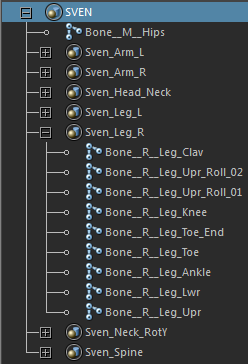
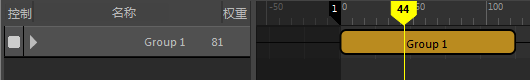

集是定义对象和属性以便在时间编辑器中使用的有效方式。从角色层次中创建一个集，然后单击时间编辑器工具栏中的“从当前选择创建片段”(Create Clip from Selection)
 。
。
注： 由于时间编辑器将角色集视为受约束驱动的属性，因此角色集与时间编辑器不兼容，并会导致意外的结果。如果要在时间编辑器中使用包含角色集的动画，请保存不含角色集的版本。
通过使用鼠标中键单击集并从大纲视图拖放到名单中，在时间编辑器中填充集。
注： 无法将集的多个实例拖放到时间编辑器中。
例如，下图中已在大纲视图中选择集 SVEN。

您可以使用鼠标中键单击 SVEN 集，将它拖放到时间编辑器名单中。
时间编辑器将在名单中创建一个新组，并在时间视图中创建一个片段。

新组包含集中的所有对象（按层次填充）。也就是说，时间编辑器将根据集的层次创建片段层次（使嵌套集显示为组片段的层次），但是每个集的任何非集内容仍将填充到单个片段中。
例如，如果一个集包含另一个集和某些对象，则会创建一个组片段，并且该片段内部存在内集的片段以及外集的对象。如果内集包含更多集，也会将其作为组片段导入，包含最内部的集中的片段。